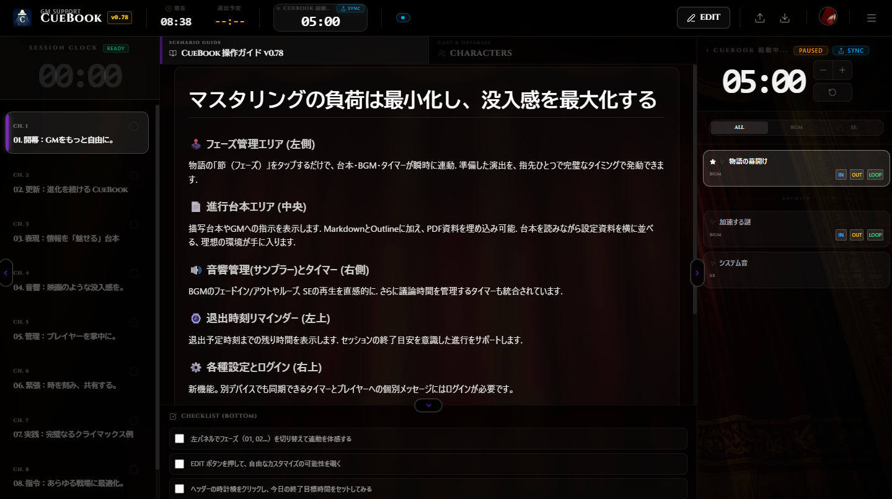
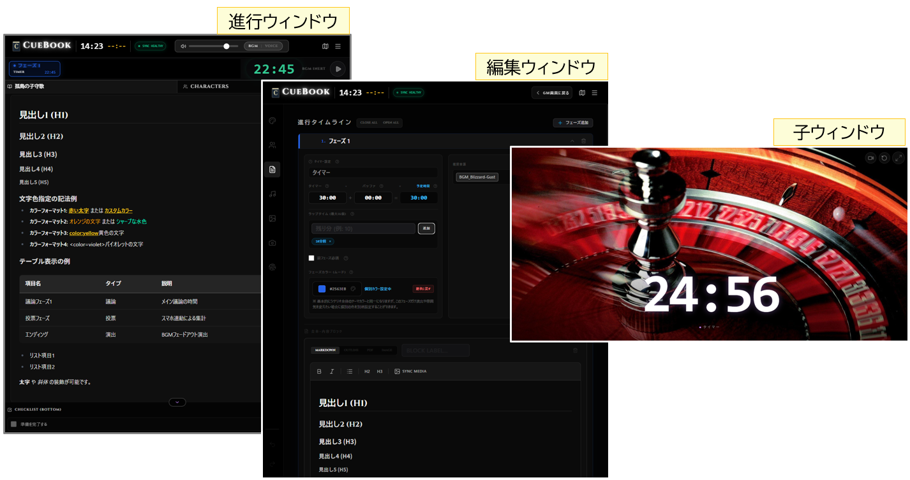
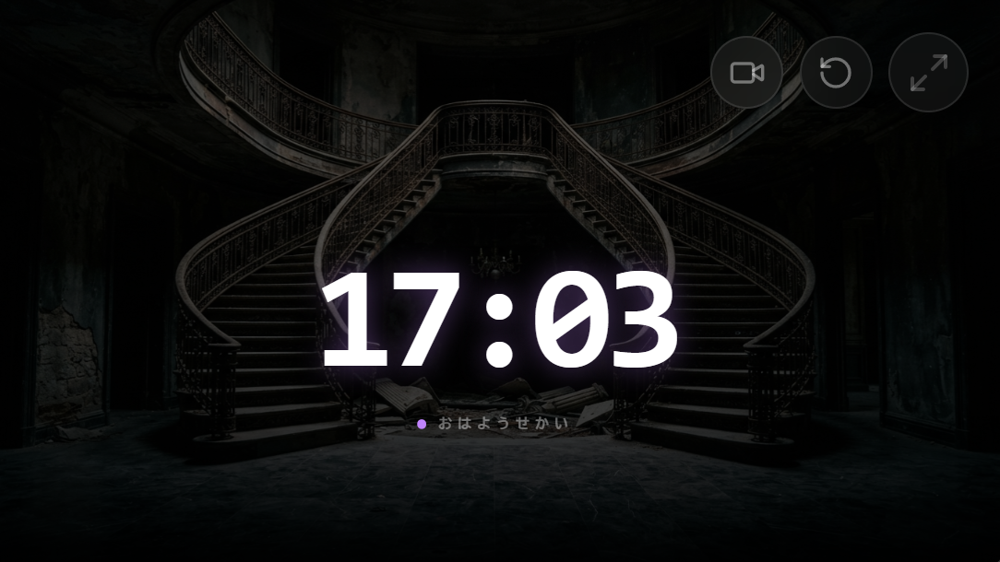
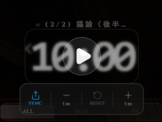

RUN
準備した台本を、迷いなく進行。フェーズと残り時間をひとつの視線に。
GM SUPPORT SYSTEM / 2026
個人GMから店舗まで。
台本、タイマー、音響、液晶やプロジェクタ演出まで、
CueBookがセッションの裏側を支えます。
台本・タイマー・音響・表示を、ひとつの進行に。



01 / SYSTEM
GMの手元にあるCueBookが、台本の進行を起点に、タイマー・BGM・SE・外部表示を同じタイミングへ揃えます。
準備した台本を、迷いなく進行。フェーズと残り時間をひとつの視線に。
シナリオ、資料、画像、音響をセッション前に組み立てる。
配線不要の子ウィンドウへ、必要な表示だけを安全に届ける。
